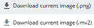
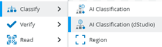
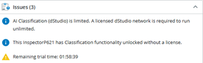
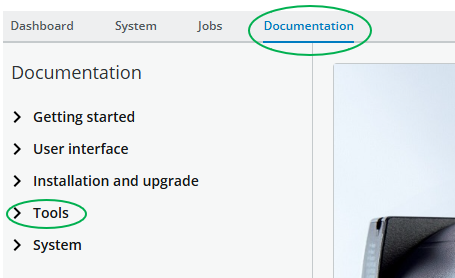
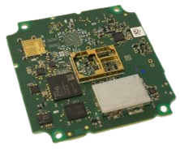
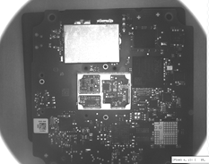
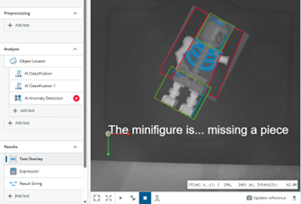

Exercises
Exercise 5 - Mass image training with SICK dStudio
You are now familiar with the basic AI tools where training happens directly on the device. However, for complex objects or scenarios requiring large datasets and higher processing power, SICK dStudio provides a cloud-based solution.
dStudio Workflow
- Collect sample images in Nova
- Upload images to dStudio (cloud)
- Annotate images in dStudio
- Set training parameters in dStudio
- Train the neural network in dStudio
- Evaluate results and download the trained neural network
- Import the neural network into Nova
- It can now run locally without a cloud connection.
Goal: Train a neural network in dStudio to identify metal button deformations.
-
Take a close look at the (damaged) metal buttons that came with the training kit. How would you sort them? Make a list.
-
Once you have all the classes, think about the production process of these buttons. How should each class be handled within the production process?
-
Think about how you want to capture the objects, which side should be up, are rotations allowed, what are the settings, do you need a locator? Find common rules that all groups will adhere to.
-
Collect at least 50 images per class. This time the images must end up on your computer so that you can later upload them to dStudio. There are several ways to do that. Pick the one you are most comfortable with collect at least 50 images per class.
(You can split the task across multiple groups and then combine the images to a huge collection!)Choose an image download method
- Click the little download icon in the bottom right of the live view window:
- Then the following pop-up window will appear

- When clicking "Download current image (.png)" the latest image will be downloaded to your PC's download folder automatically.
- Use the (offline) AI Classification tool as before.
- Create classes and add the images just as you did in an earlier exercise.
- After 100 images there will be a warning:
- Ignore that, as you won't train the neural network locally. Once you collected all the images and sorted them into the desired classes you can click on in the Dataset tab to export the dataset.
- Extract the zip file to access the image files.
- Click the little download icon in the bottom right of the live view window:
-
If you haven’t already, create a SICK ID at id.sick.com. With a SICK ID you will be able to log into dStudio and use the service.
You can now decide whether:- Each participant works in their own project, keeping data separate, or
- All images are uploaded to the same SICK ID/account, creating a shared database of button images for larger and more diverse training set.
-
Follow the Classification Tutorial on the dStudio Website: dStudio tutorials, but adapt the Classification tutorial to your own object, e.g. the metal buttons that came with the set.
-
In dStudio, after you have trained the neural network, click and download the trial network . This will download a json file. Now, in the Nova interface, chose Analysis → Add tool → Classify → AI Classification (dStudio).

In the tool's settings you can choose to upload a network . Select the json-file you downloaded. After uploading the file, you can immediately see what the sensor can identify as well as the confidence score.Attention: Once you have uploaded the json file, some issues will pop up:

You can ignore them, as they barely affect the educational purpose of the training set. You can only use a neural network for two hours at a time (as indicated by the countdown). If you want to reset the timer, just unplug the sensor, forcing a reboot. After the sensor is plugged in again and rebooted, the timer will be reset.
-
Test out the neural network locally on your sensor and test the results. If every group created their own neural network: How do they compare? What group can showcase the best results?
Exercise Suggestions - Some Project ideas
Now we covered the most important AI tools available in Nova. These are just some suggestions that make some interesting projects to work with. Many times, there’s a multitude of ways to approach a problem and solve it. You can read up on some of the remaining tools to learn more and find new ways to find solutions.

PCB Inspection


You can use PCBs to verify whether certain components are present and correctly positioned. Example: - The silver metal shield must be precisely aligned, secured by small hatches on all sides. - Additionally, if there is an issue with the PCB, the barcode (matrix code) must be readable for identification and traceability.
Minifigures

Minifigures are excellent for testing multiple tools and adding logic with result strings as outputs. They are interesting objects because: - They can be easily manipulated (e.g., legs up, arms stretched). - They have multiple valid positions that should still result in a positive outcome when checking for completeness.
Only if a part is really missing the sensor should trigger a fault.